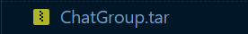
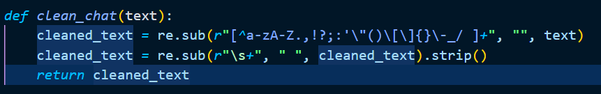
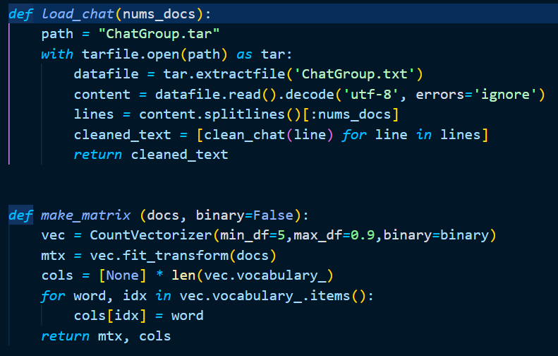
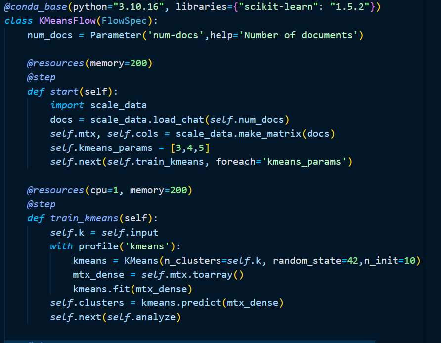
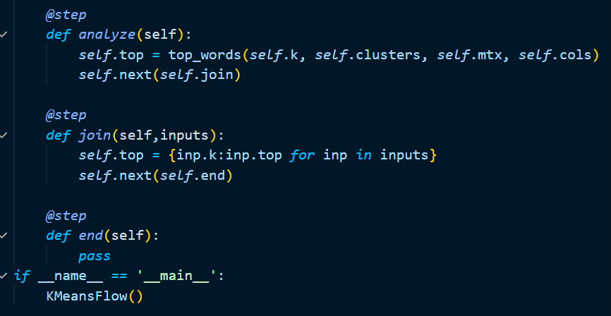
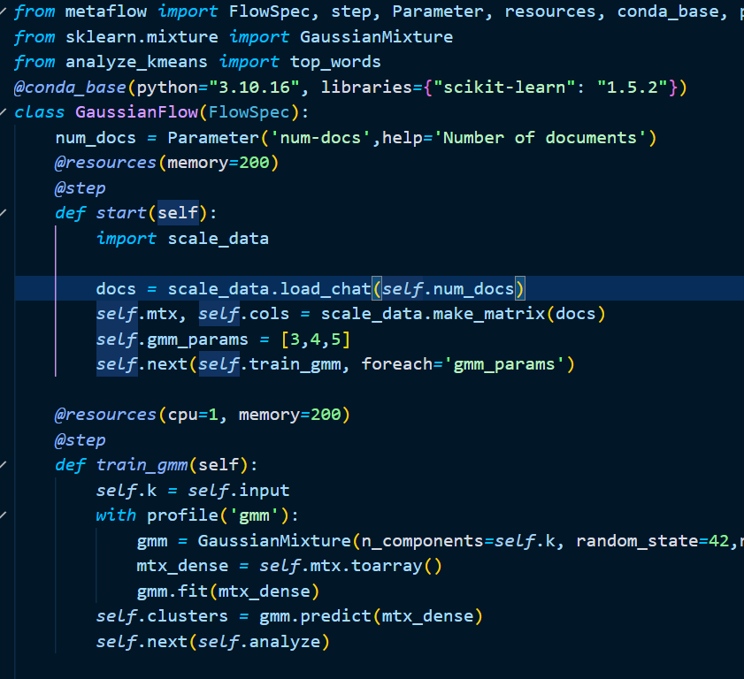
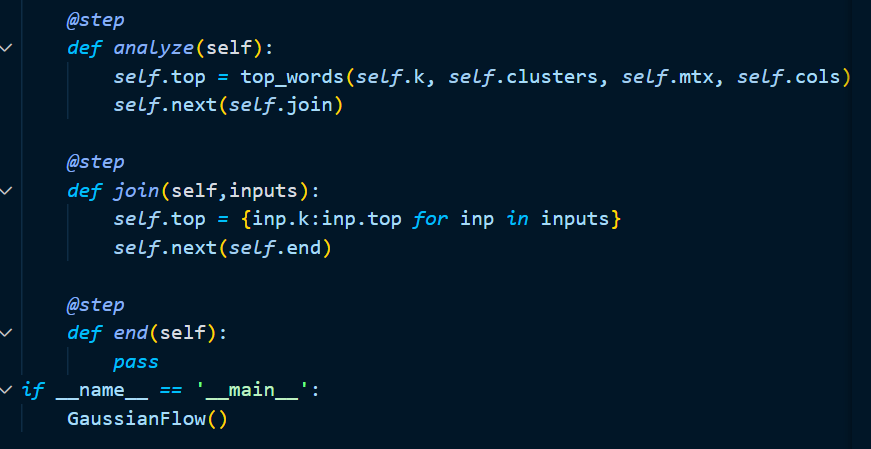
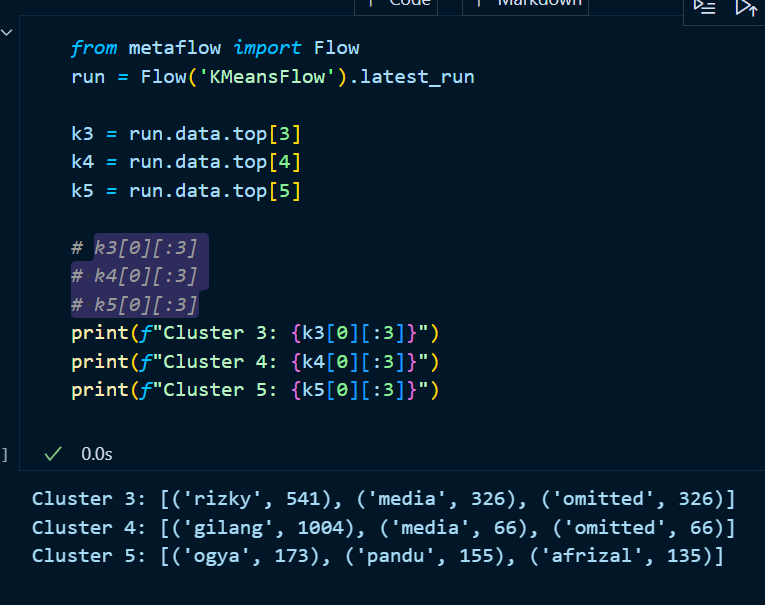
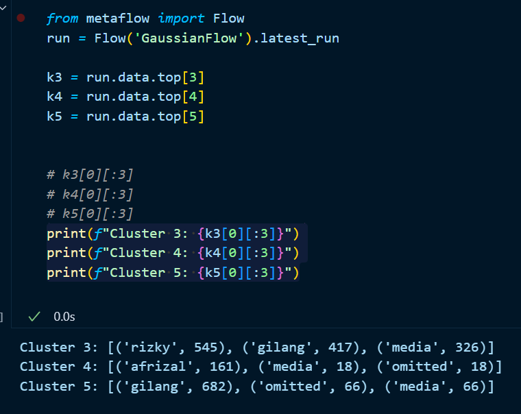

/* Global Styles */
Nama : Rizky Maulana Saputra
NIM : L200220230
Kelas : D
Tugas sebelum UTS Infrastruktur dan Platform Sains Data
Tugas Perkuliahan Menggunakan Metaflow
Deskripsi Proyek
Proyek isi adalah bagian dari tugas perkuliahan yang menggunakan Metaflow untuk membuat pipeline yang mengilustrasikan proses perkuliahan.
Pipeline ini mensimulasikan tahapan mulai dari pembayaran SPP, mengikuti perkuliahan selama 14 pertemuan, mengikuti Ujian Tengah Semester, mengikuti Ujian Akhir Semester, hingga menghitung nilai akhir
berdasarkan kehadiran dan nilai ujian.
Alur Proses
Pipeline ini terdiri dari beberapa tahapan:
- Start - Memulai proses perkuliahan.
- SPP Payment - Memastikan apakah SPP sudah dibayar.
- Confirm Payment - Mengecek validitas pembayaran SPP.
- Attend Class - Melakukan simulasi kehadiran pada 14 pertemuan.
- Attend UTS- Mengikuti Ujian Tengah Semester
- Attend UAS- Mengikuti Ujian Akhir Semester
- Calculate Final Score - Menghitung nilai akhir berdasarkan nilai UTS, nilai UAS, dan tingkat kehadiran.
- End - Menyelesaikan proses.
Tugas sebelum UAS Infrastruktur dan Platform Sains Data
Tugas Perkuliahan Analisis Konten Group Whatsapp
Deskripsi Proyek
Proyek ini bertujuan untuk menganalisis dan mengelompokkan konten percakapan dari beberapa grup WhatsApp menggunakan teknik data clustering.
Tujuan akhir dari analisis ini adalah untuk menemukan pola atau topik yang sering dibahas dalam grup-grup WhatsApp dan mengelompokkan pesan-pesan yang memiliki kesamaan berdasarkan kata-kata yang digunakan.
Alur Pengerjaan
-
Export Konten ChatGroup Whatsapp dan Compress menjadi .tar

-
Melakukan Cleaning data yang akan menghilangkan tanda baca dan angka

Menggunakan regex untuk menghilangkan karakter yang tidak diinginkan dan menghilangkan spasi yang berlebihan
-
Menggunakan kode yang ada di scale_data.py dan many_kmeans_flow.py

Memodifikasi scale_data.py karena untuk menyesuaikan data yang digunakan dan menambahkan fungsi clean_chat


Pada step start menambahi parameter untuk cluster yakni 3,4,5 dan mengurangi resource untuk membatasi penggunaan ram dan cpu
-
Menggunakan Algoritma lain yaitu Gaussian


Karena menggunakan gaussian tentu perlu import modulenya terlebih dahulu
Untuk step train_gmm Gaussian ini menggunakan n_component bukan seperti kmeans yang menggunakan n_cluster
-
Disini saya menampilkannya menggunakan jupyter notebook
Gambar dibawah ini menggunakan Algorithm KMeans

Karena terdapat media omitted yang menandakan tidak import gambar juga
Semua cluster berhubungan dengan membuat sebuah konten yang nama orang - orang tersebut terlibat dikarenakan grup itu memang digunakan terkait konten
Gambar dibawah ini menggunakan Algorithm Gaussian

Dari kedua Algorithm diatas memiliki hasil yang berbeda meskipun ada kata yang sama
Dikarenakan Gaussian ini memperhitungkan probabilitas serta distribusi data dibandingkan dengan Kmeans yang langsung membagi data